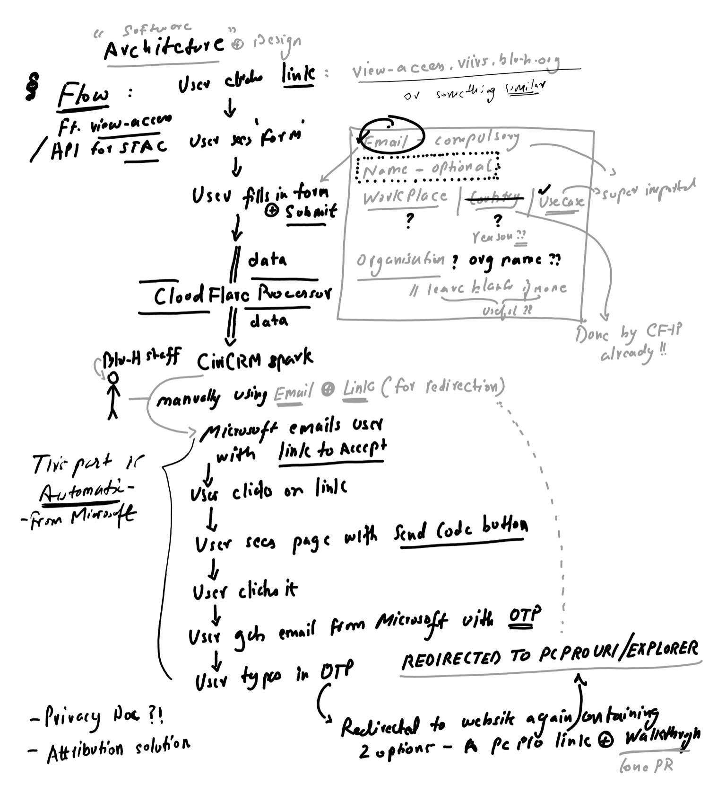
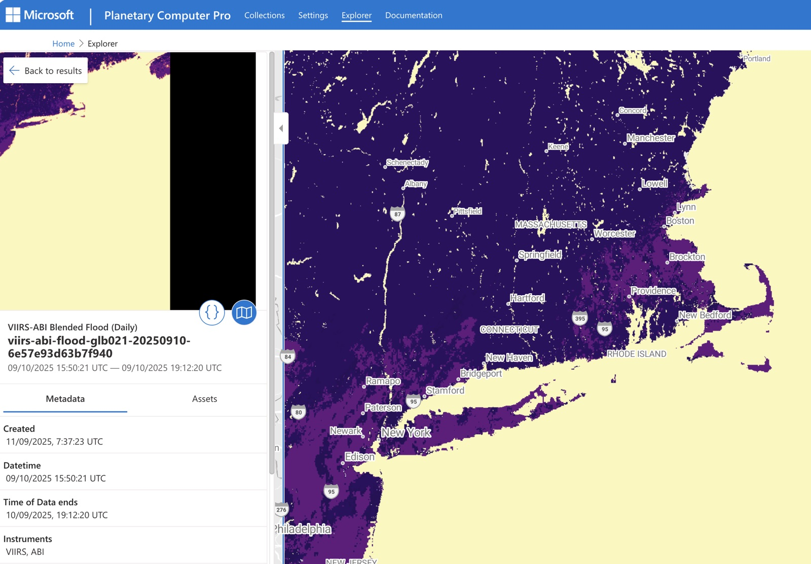

Moving a satellite flood archive to the cloud
Blu-H, a climate non-profit, holds a continuous record of VIIRS satellite flood maps that covers years missing from NOAA's public archive. I led the project end to end, from the data science to the engineering and architecture, moving it from an on-prem drive into a searchable, map-ready cloud catalog.
A sneak peek into how I approach architecting a solution


The problem
VIIRS is an imaging instrument on NOAA/NASA polar-orbiting satellites. Its flood products show where water is, every day, worldwide. Blu-H's copy of that record existed only as files on a drive: researchers couldn't search it, map tools couldn't display it, and the drive was a single point of failure.
The goal was a STAC catalog (the open standard for searchable geospatial data) on Microsoft Planetary Computer Pro, with every file converted to a Cloud-Optimised GeoTIFF that can be tiled straight onto a map. That meant a backfill of hundreds of thousands of files, run as parallel batch jobs in the cloud.
What I did
1. Checked the data before building on assumptions
The pipeline had been designed around one file format, because the early samples used it. I surveyed the actual archive and found it was stored in different formats entirely. That finding moved ingest onto a GeoTIFF-to-COG path and later justified retiring the original pipeline (step 5).
2. Built the bulk-ingest infrastructure
I wrote the Terraform for a queue-driven batch job and the wrapper that splits the archive into shards, so the backfill runs in parallel without anyone babysitting it.
3. Diagnosed throughput and data-loss problems from production logs
Once the backfill was running, I queried its logs and the catalog's API rather than guessing. Four problems stood out:
- Progress was saved but never read back, so every restarted shard began from zero and redid finished work.
- A catalog lookup almost never matched, because it only looked at the first page of results.
- One unreadable file failed a whole shard, sending hundreds of good files back for retry.
- The status poller was slower than the job it was waiting for, adding dead time to every file.
The fixes: resume from saved progress, read results directly instead of searching for them, set unreadable files aside in their own state instead of failing the shard, and tighten polling. Throughput went up about 15%, and good files are no longer at risk of being dropped.
4. Batched catalog runs: about 4× faster (projected)
Measurements showed each catalog run was almost all fixed overhead, and every run carried a single file. I split ingestion into a per-file staging step and a shared finalise step, so one run carries a batch.
Choosing the batch size: a run that misses its deadline fails the whole shard. I picked the batch size from the worst-case run time, not the best-case speed. It keeps a wide safety margin and still captures most of the saving. Any file that isn't confirmed in the catalog retries on the old one-at-a-time path, so batching can't wrongly mark a file as done.
5. Deleted what nothing used
The original pipeline from step 1 had no production use, but it still had infrastructure, alerts and permissions attached. I wrote the architecture decision record to retire it and removed several thousand lines of code, infrastructure and docs. The one health check that depended on it stayed.
Also
- Fixed a quadratic slowdown in how progress was saved.
- Removed write contention in the catalog with a read-before-write check.
- Built the self-service data-request form on the public site.
The source code is private to Blu-H. I'm happy to walk through the design in an interview.